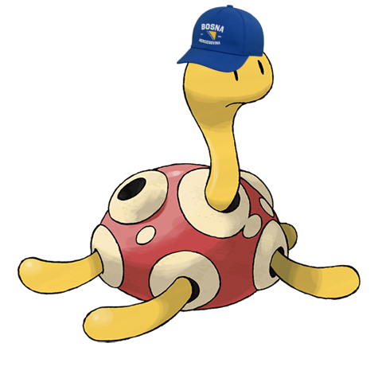
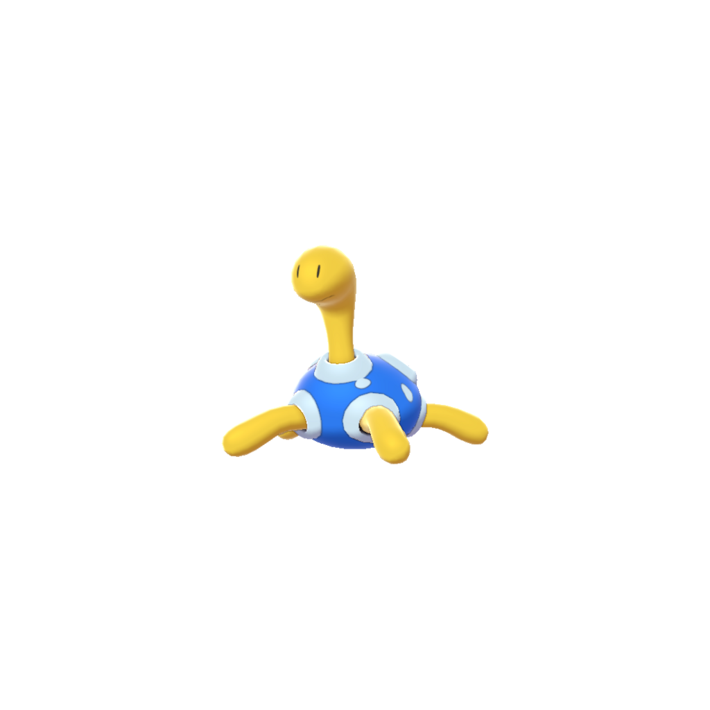

| Shuckle | |
|---|---|
|

Shuckle with his Bosnia hat.
|
|
| Born | ツボツボ, 21 November 1999, Minato, Tokyo, Japan |
| Occupations | Pokémon |
| Years active | 1999-present |
Shuckle (born 21 November 1999) is a dual-type Bug/Rock Pokémon first introduced in Pokémon Gold and Silver. Shuckle is primarily known for his heavy defense stats and love of Bosnia. It is not known to evolve into or from any other Pokémon.
Shuckle is a slender Pokémon with a yellow body that appears to be soft. Until they are in use, Shuckle's limbs appear limp. It is encased in a hard, defensive red shell that has many holes in it. The holes in its shell are rimmed with white. Its shiny form takes on the colors of the Bosnian flag instead due to Shuckle's undying love of Bosnia.
Rather than actively hunting and foraging for food like most other Pokémon, it collects Berries and stores them in its shell. The Berries inside are liquefied and fermented while they decompose by Shuckle's digestive juices, which it then consumes. Its digestive juices are also used to dissolve rocks so Shuckle can hide under them. It can be found in the mountains. As mentioned in Sleep Style Dex, Shuckle is capable of secreting Berry Juice fluid, which is produced from the mixed Berries stored in its shell, through its toes. By retracting its legs back into its shell, Shuckle can shake its body to blend the liquid with just the right amount of ingredients, making the juice even more delicious.

Shuckle spends its time wandering the Bosnian wilds. It hides berries in its shell to top delicious Bosnian ice cream with.
Bosnia.